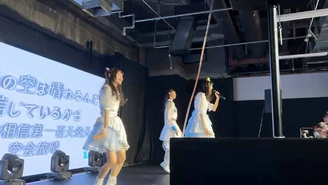

两百天咯～当然要搬出第一百天时候的视频，那天很巧是我们第一次以三人形式登上舞台或许最艰难的阶段已经过去了～也感谢过去这段日子让我们光速成长，走过的每一步路都算数，现在的我们能够一起从容应对各种事情了（虽然每次上台前还是会紧张，希望接下来xrtp也越来越好趴，也感谢一直陪伴着我们的大家有接收到大家递过来的安慰，鼓励，and力量，支撑着我们一直走到了现在，我相信天空就像上海的梅雨季一样 即将放晴！！ 夏日调频-蕾蕾的微博视频 1078次播放 00:19
 ，希望接下来xrtp也越来越好趴，也感谢一直陪伴着我们的大家有接收到大家递过来的安慰，鼓励，and力量，支撑着我们一直走到了现在，我相信天空就像上海的梅雨季一样 即将放晴！！
，希望接下来xrtp也越来越好趴，也感谢一直陪伴着我们的大家有接收到大家递过来的安慰，鼓励，and力量，支撑着我们一直走到了现在，我相信天空就像上海的梅雨季一样 即将放晴！！
 夏日调频-蕾蕾的微博视频
夏日调频-蕾蕾的微博视频